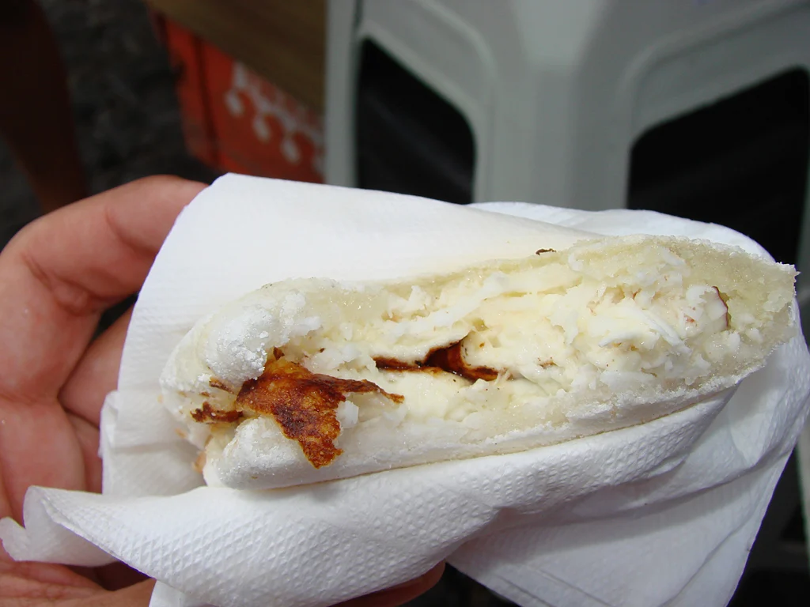
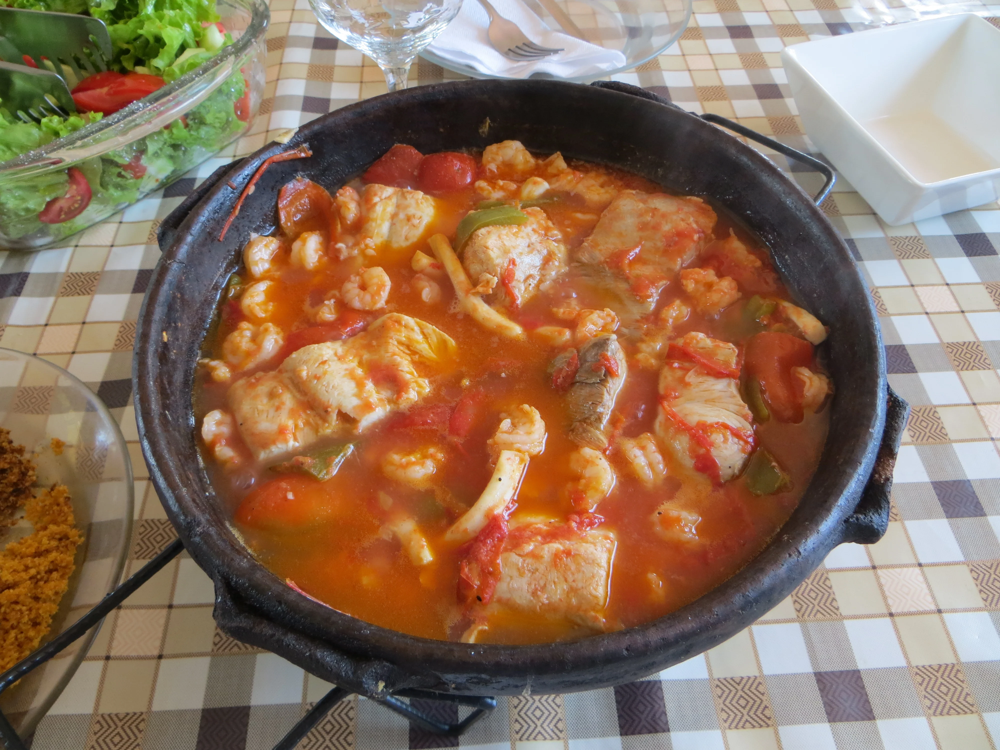
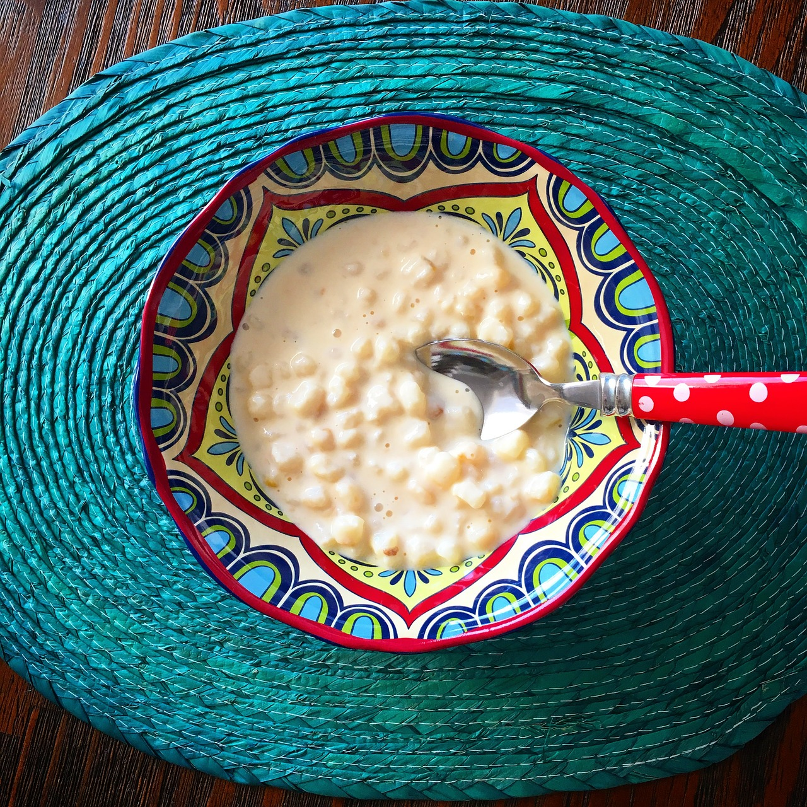
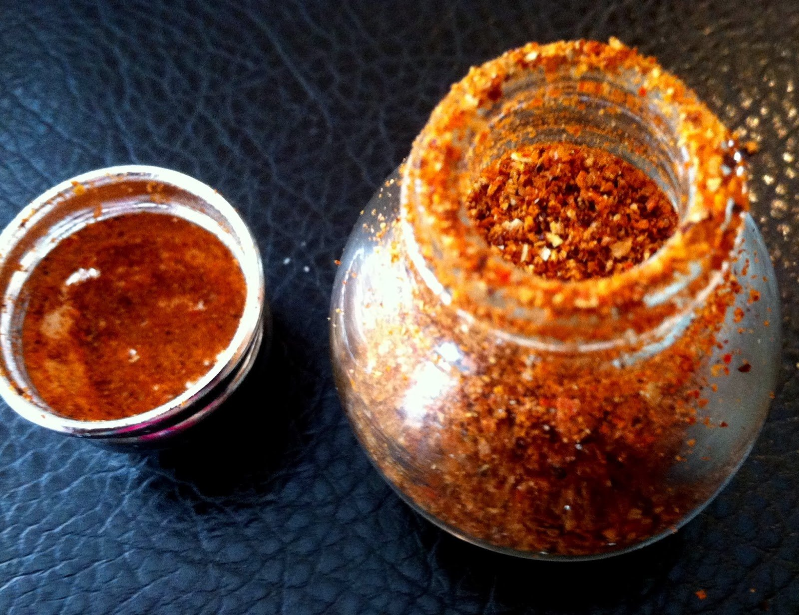

Comidas indígenas
A culinária é um traço importante, e único, da cultura de cada povo. Justamente por isso, ela é muito característica de cada lugar. Por isso, as comidas típicas indígenas brasileiras possuem variações, até mesmo entre uma tribo e outra.
Além disso, a comida, nas tribos indígenas, é preparada com diversas finalidades, como por exemplo oferendas aos deuses e espíritos, para as mulheres períodos pós-parto e para os homens que vão caçar. Há, ainda, os alimentos proibidos e os especiais para festas e determinadas épocas do ano. Ainda que muitas comidas tenham sofrido influência dos portugueses e dos africanos, ou tenham sido modificadas ao longo do tempo, elas guardam em sua essência a originalidade de um povo que é responsável pela construção de boa parte daquilo que hoje compõem a cultura brasileira.
TAPIOCA
Muito semelhante a tapioca que conhecemos, o beiju é uma prato do índios que viviam, inicialmente, na região onde hoje está o estado de Pernambuco. Enquanto a tapioca é feita do amido da mandioca, o beiju é feito a partir da massa da mandioca. Esta, ao ser espalhada em uma frigideira forma uma espécie de crepe seco. Entre os recheios mais comuns, estão o coco, a carne seca e o queijo coalho.
PEIXE
Apesar de ter recebido importantes alterações dos portugueses e africanos que vieram para o Brasil, a moqueca é um prato tradicional indígena. Vem da língua tupi, pokeka, e quer dizer “assado de peixes”. É muito consumida junto com o pirão, que tem como base farinha de mandioca e caldo de peixe. A moqueca, salvas as variações de cada região, hoje é um cozido de peixe. Entretanto, originalmente era feita assada, em áreas cobertas de cinzas e em grelhas
CANJICA
Envolto em muitas controvérsias a respeito de sua origem, acredita-se que um dos pratos mais bem quistos das festas juninas tem origem indígena, mais especificamente, uma herança dos índios Tupinambás. A canjica é feita a partir de um milho branco, cozido e preparado junto com outros ingredientes, como leite, leite de coco e açúcar. Em algumas regiões brasileira, o prato recebe o nome de mungunzá.
JIQUITAIAS
A jiquitaia é um prato tipicamente indígena, mais precisamente Baniwa. A iguaria é composta por uma mistura de pimentas, que são secas ao sol, e piladas junto com sal. Entretanto, algumas pessoas fazem o preparo utilizando soro de queijo. Neste preparo as pimentas frescas, o sal e o soro são colocados em um pote. O preparo é curtido durante alguns dias e fica pronto quando o vidro é aberto e não há mais gás oriundo da mistura.